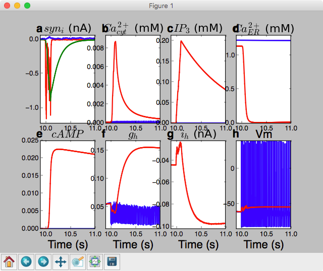
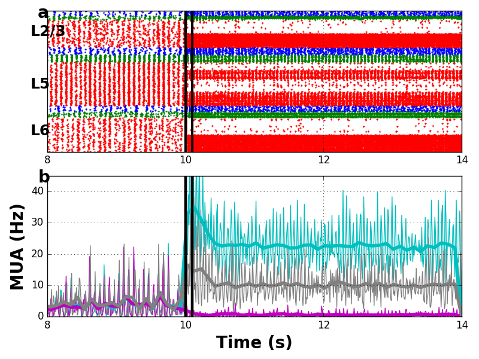

These simulations were used in the following article:
Neymotin SA, McDougal RA, Bulanova AS, Zeki M, Lakatos P, Terman D,
Hines ML, Lytton WW. Calcium regulation of HCN channels supports
persistent activity in a multiscale model of neocortex.
Neuroscience 2016.
http://www.sciencedirect.com/science/article/pii/S0306452215011367
The code in this folder generates Fig. 4 (isolated pyramidal neuron
persistent activity) and Fig. 5 (network persistent activity).
The simulations were tested/developed on LINUX systems, but may run on
Microsoft Windows or Mac OS.
To run the demo, you will need the NEURON simulator (version 7.4 and
up; available at http://www.neuron.yale.edu) compiled with python and
MPI enabled. You will need Matplotlib to draw the output (
http://matplotlib.org/ ).
Instructions to setup the model in unix/linux:
unzip the file
cd CaHDemo
nrnivmodl
Please
see http://senselab.med.yale.edu/ModelDB/NEURON_DwnldGuide.html
for more help or help in other operating systems.
The nrnivmodl command will produce an architecture-dependent folder
with a script called special. On 64 bit systems the folder is x86_64.
---------------------------------------------------------------------
Simulation of isolated pyramidal cell persistent activity (Figure 4).
Run the following code in a terminal from within the directory
containing the model files:
python -i onepyr.py onepyr.cfg
This simulation takes ~35 seconds on Linux with Intel(R) Core(TM) i7-4940MX
CPU @ 3.10GHz and ~52 seconds on a 2012 MacBook Pro and produces this:

---------------------------------------------------------------------
Run network simulation from a terminal with:
mpiexec -np 8 nrniv -python -mpi mpisim.py netcfg.cfg
The network simulation uses MPI for parallelization. The simulation
can take a long time to run, depending on your hardware setup. This
simulation saves output data to the data subdirectory. simdat.py
loads the data and draws the output.
To plot the output from this simulation, run the following:
python -i simdat.py
which will display results similar to figure 5 in the paper:

Note: The -np 8 above specifies that mpiexec should use 8 cores. This
number should change depending on your hardware setup. If changing 8
to 24 cores (-np 24), make sure to update the defnCPU parameter on
line 38 of simdat.py; this is because mpisim.py saves 1 output file
per core. The simulation takes ~28 minutes on Linux with 8 cores
(Intel(R) Core(TM) i7-4940MX CPU @ 3.10GHz) and runs in ~11 minutes on
Linux with 24 cores (Intel(R) Xeon(R) CPU E5-4610 0 @ 2.40GHz).
---------------------------------------------------------------------
For questions/comments email:
samn at neurosim dot downstate dot edu
or
robert dot mcdougal at yale dot edu
20160915 This updated version from the Lytton lab allows their models
which contain misc.mod and misc.h to compile on the mac.
20171010 An update from Robert McDougal to run on mswin as well as linux, mac.
20171011 Thanks Adam Newton for noticing missing misc.h. Added a screenshot.
20171012 Adam supplied a misc.mod that helps simdat.py complete and
Robert added a line to mpisim.py so it could run from Python with a
command like:
mpiexec -n 8 python mpisim.py netcfg.cfg
20171012a Robert suggested an edit to simdat.py that helps it run more
consistently.
20220523 Updated MOD files to contain valid C++ and be compatible with
the upcoming versions 8.2 and 9.0 of NEURON.